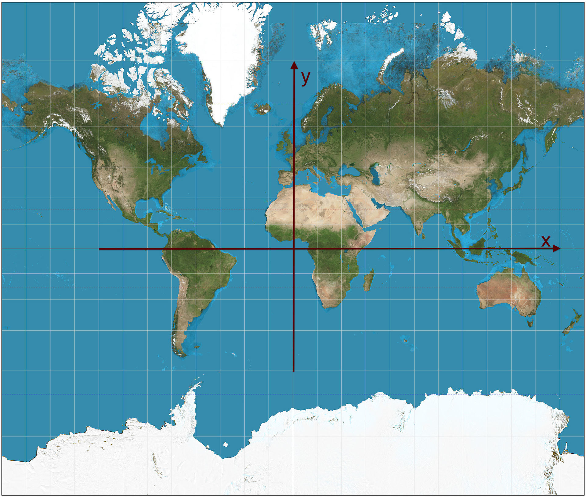

When you define your documents, a field can be assigned the special role of position. This enables the user to limit hits to within a particular area, or even to use the distance from a particular point as an additional criteria for calculating relevancy.
Your typical search definition will look like this:
search local {
document local {
field title type string {
indexing: index
}
field latlong type position {
indexing: attribute
}
}
fieldset default {
fields: title
}
}
And the document will look like this:
<document documenttype="local" documentid="id:local:local::abc123">
<title>some random pizza place</title>
<latlong>N37.401;W121.996</latlong>
</document>
To add a geographical position to your search, use the pos.ll parameter in the query:
…search/?query=pizza&pos.ll=N37.416383%3BW122.024683
By default, this will limit the hits otherwise returned by the given query to those having a position within 50km of the Yahoo! HQ offices in Sunnyvale. Since 50km is probably too far to go just to get some pizza, a more realistic example would add a radius of e.g. 5 miles:
…search/?query=pizza&pos.ll=N37.416383%3BW122.024683&pos.radius=5mi
The pos.radius parameter accepts distances in kilometers
(km), miles (mi), and meters (m).
Each search result will have an additional summary entry that contains
the distance from the given geographical position, in millionths of a
degree—about 10 cm. The new entry gets the name of the search
definition field and the suffix “distance”:
<fieldname>.distance. In the examples above, the
name would be latlong.distance. For documents with multiple
positions in the attribute, the distance to the nearest position will be returned.
The corresponding rank feature for this example would
be distance(latlong) or closeness(latlong)
or closeness(latlong).logscale — the last is probably the
most useful when combining distance ranking with textual relevance
ranking.
field mygeo type position {
indexing: attribute | summary
}
you'll get output which in the default rendering looks like this:
<field name="mygeo">
<struct-field name="y">37374821</struct-field>
<struct-field name="x">-122057174</struct-field>
</field>
<field name="mygeo.position"><position x="-122057174" y="37374821" latlong="N37.374821;W122.057174" /></field>
<field name="mygeo.distance">48921</field>
The first summary field here ("latlong") is only generated if you specify "summary" in the indexing statement. It is mostly intended for programmatic use in a result processor (a Searcher).
The second summary field is generated as XML in the back-end, with XML attributes for x/y and also a "latlong" attribute with the same format as the input (feeding) format.
Note that the numbers used for "x" and "y" in the above two fields are integers - it's a direct representation of the internal x/y struct used for position. These are in millionths of a degree, so it's quite easy to convert. Also note which is which of "x" and "y": 
It's just putting a normal coordinate system on top of the world map, so "x" is the longitude (east-west) and "y" the latitude (north-south).
The third summary field is the distance, also as an integer, and also in
millionths of degrees. When converting to internal units (millionths
of degrees), the Earth polar radius is used, so
degrees = 180.0 * meters / (Math.PI * 6356752.0);
is the basic conversion formula.
pos.bb parameter in
the query:
…search/?query=pizza&pos.bb=n=37.44899,s=37.3323,e=-121.98241,w=-122.06566The format is a simplified version of the XML format returned by GWS such as by http://gws.maps.yahoo.com/findlocation?q=sunnyvale,ca&flags=X and it's also simple to transform a bounding box such as given by geoplanet: http://developer.yahoo.com/geo/geoplanet/guide/api-reference.html#api-place which returns something like this:
<boundingBox>
<southWest>
<latitude>40.183868</latitude>
<longitude>-74.819519</longitude>
</southWest>
<northEast>
<latitude>40.248291</latitude>
<longitude>-74.728798</longitude>
</northEast>
</boundingBox>
here you have (in order) south/west corner, north/east corner, which is simple to use in a query like this:
…search/?query=pizza&pos.bb=s=40.183868,w=-74.819519,n=40.248291,e=-74.728798For convenience, the directions S/W/N/E can appear in any order, and be speficied in lower or upper case, but you must have N>=S and E>=W.
For some applications, it can be useful to have several position attributes that may be searched. For example an address book application could use positions for home address and work address. This is possible to declare without any special considerations in the search definition file, but needs some extra handling on the query side. A single query can only search in one of the position attributes, and must specify which attribute with a pos.attribute query parameter. If you want to have some searches that spans several fields you must make a combined field (outside vespa or in a document processor before indexing) that holds them all.
Example:
search address {
document address {
field homeaddress type string {
indexing: summary | index
}
field homelatlong type position {
indexing: attribute
}
field workaddress type string {
indexing: summary | index
}
field worklatlong type position {
indexing: attribute
}
field bothlatlong type array {
indexing: attribute
}
}
field bothaddress type string {
indexing: input homeaddress . " " . input workaddress | index
}
}
Here we assume that the home fields will contain the address and
position of your house, the work fields the address and position of
your workplace, while the "bothlatlong" field is assumed to be filled
with the positions of both house and workplace somehow. In a query
it's then possible to say
?query=homeaddress:sunnyvale&pos.attribute=homelatlong&pos.ll=N37.416383%3BW122.024683&pos.radius=5kmwhich is unlikely to give very many hits, since it's mostly a business district around Yahoo! headquarters, while
?query=workaddress:sunnyvale&pos.attribute=worklatlong&pos.ll=N37.416383%3BW122.024683&pos.radius=5kmwould show lots of people working in Sunnyvale; use "pos.attribute=bothlatlong" for cases where it's uncertain if home address or work address position was wanted.